선체 내부 다중가설 전역 위치추정
라이다 스캔 한 장만으로, 반복 구조가 심한 선박 내부에서 로봇의 위치 (x, y, z, yaw)를 찾는 방법입니다. 확신할 수 없을 때는 답을 하나로 찍지 않고, 배제할 수 없는 후보를 전부 가중치와 함께 내보냅니다. 이 페이지는 지도와 데이터셋을 어떻게 준비했는지부터 시작해, 영상에 나오는 9단계를 순서대로 설명합니다.
아래 수치는 모두 영상에 쓰인 실제 실행 결과와 데이터셋 기록에서 가져왔습니다.
한눈에 보기
핵심 아이디어는 "맨해튼 구조 덕분에 6자유도 문제를 쉬운 1차원 문제들로 쪼갠다"입니다. 선박 중앙부(parallel body)의 벽, 격벽, 갑판은 서로 직각으로 만납니다. 그러면:
- 회전(yaw)은 벽 법선 방향만 보면 90° 단위까지 정해집니다. 남는 모호함은 4가지뿐입니다.
- 횡단면 이동(y, z)은 스캔에 보이는 평면 몇 개와 지도의 평면 목록을 맞추면 나옵니다.
- 길이방향 이동(x)은 "프레임(늑판)이 x축을 따라 어떻게 배치돼 있나"라는 1차원 신호의 상관(correlation)으로 찾습니다. 문제는 이 신호가 3 m마다 거의 똑같이 반복된다는 점입니다.
그래서 단계 1–5는 각 축의 후보 목록을 만들고, 단계 6–8은 후보 조합을 실제 지도 점군에 대 보며 "최고 후보가 확실히 이기는 경쟁자만 탈락"시킵니다. 롤·피치는 0으로 가정합니다(센서를 수평으로 장착).
- 입력스캔 + 구획(compartment) 사전정보
- Yaw 가설벽 법선 투표, mod 90° → 4개
- 축 분류점을 X/Y/Z 향 면으로 라벨링
- 단면 투표y, z 후보 각 6개
- 길이방향 상관구획 안 x 후보 ~20개
- 가설 선별약 2,800개 포즈 → 150 → 25
- ICP 정밀화4-DoF point-to-plane
- Paired-z 선택z < 3이면 유지
- 출력가중치 붙은 가설 집합
영상은 이 과정을 Isaac Sim에서 찍은 실제 라이다 스캔 두 장(no_yaw 데이터셋)으로 보여 줍니다.
| 케이스 | 스캔 | 성격 | 결과 |
|---|---|---|---|
| Case B (전체 설명) | no_yaw 2번 | 닮은꼴 위치를 스캔만으로 배제 못 함 | 가설 10개, 1위 = 정답 (가중치 28.5%) |
| Case A (축약) | no_yaw 0번 | 스캔만으로 위치가 결정됨 | 가설 1개 (decisive), 정답 |
문제: 왜 어려운가
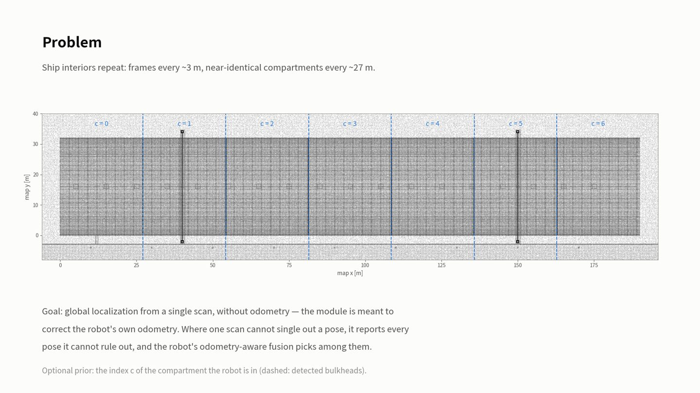
선박 내부는 같은 모양이 계속 반복됩니다.
- 프레임 간격 약 3 m: 늑판(transverse floor)이 일정 간격으로 서 있어서, 3 m 옮겨도 스캔이 거의 같아 보입니다.
- 구획 간격 약 27 m: 격벽으로 나뉜 구획이 거의 동일하게 반복됩니다. 이 지도에서는 격벽이 x ≈ 27.1, 54.2, 81.4, 108.5, 135.7, 162.8 m에서 검출되어 구획 7개가 생깁니다.
Scan Context 같은 범용 6-DoF 매칭은 이런 환경에서 틀린 위치를 자신 있게 고르기 쉽습니다. 이 방법의 목표는 그 반대입니다.
설계 원칙: 이 모듈은 로봇의 오도메트리를 보정하려고 만든 것이라 오도메트리나 이전 추정을 전혀 쓰지 않습니다. 매 스캔을 처음부터 풉니다. 스캔 하나로 결정이 안 되면 배제 못 하는 포즈를 모두 내보내고, 그중 고르는 일은 오도메트리를 아는 로봇 쪽 융합기(fusion)에 맡깁니다.
선택적 사전정보: 로봇이 "지금 몇 번 구획에 있다"는 것만 알면 탐색 범위가 그 구획 안으로 줄어듭니다. 영상의 두 케이스는 모두 c = 2, x ∈ [54.2, 81.4) m입니다.
Prior map 만들기
위치추정에 쓰는 지도(prior map)는 두 가지이고, 둘 다 같은 3D 선체 모델에서 나옵니다. 로봇을 몰고 다니며 SLAM으로 지도를 만들지 않습니다.
| 지도 | 내용 | 쓰이는 곳 |
|---|---|---|
| 지도 점군 | 선체 표면 점 1,967,133개 (0.2 m 간격) | 6–8단계: 후보 포즈 점수 계산, ICP, paired z |
| 맨해튼 지도 | 평면 위치 목록 + x 시그니처 (텍스트 약 6 KB) | 2–5단계: y, z, x 후보 생성, 구획 검출 |
1. 선체 모델
선체 내부 구조를 절차적으로 생성하고, 도크 주변 환경을 덧붙인 시뮬레이션 장면
2. 표면 샘플링
모델의 각 면에서 직접 점을 뽑음 → 약 501만 점
3. 복셀 다운샘플
0.2 m 칸마다 평균점 하나 → 약 197만 점 (지도 점군)
4. 맨해튼 지도 추출
지도 점군에서 평면 목록, x 시그니처, 구획을 계산
① 선체 모델
실제 중형 벌크선(Supramax급) 비율로 이중저(double bottom) 구획을 만들었습니다. 모든 부재는 직육면체(일부 소품은 원기둥)라서 형상이 정확히 알려져 있습니다. 단위는 m입니다.
| 부재 | 방향 | 배치 | 위치추정에서의 역할 |
|---|---|---|---|
| 선체 크기 | — | 길이 190, 폭 32, 이중저 높이 2.0 | 지도 범위 |
| 늑판 (floor) | X 향 | 3.0 m 간격, 경감공(lightening hole) 있음, 4개마다 맨홀 | 3 m 주기 반복의 원인. x 시그니처의 작은 봉우리 |
| 횡격벽 (transverse bulkhead) | X 향 | 6개, 길이를 7등분 (≈ 27.1 m 간격), 바닥 근처에 1.0 × 1.2 m 개구 | x 시그니처의 큰 봉우리 → 구획 7개 |
| 종늑골 (longitudinal) | Y 향 | 20개, 폭 방향 등간격, 바닥판·내저판 두 층 (T형 단면) | y 평면 목록 |
| 거더 (girder) | Y 향 | 5개 (중심선 1 + 양쪽 2), 이중저 전체 높이, 칸마다 구멍 | y 평면 목록 |
| 바닥판 / 내저판 | Z 향 | z ≈ 0.01과 z ≈ 2.01 | z 평면 목록 |
| 빌지 + 측벽 | 곡면 / Y 향 | 반경 16 m 사분원을 12조각으로 근사, 측벽 높이 16.8 m, 상부 개방 | 맨해튼 가정 밖 (곡면은 3단계에서 대부분 버려짐) |
여기에 도크 바닥, 킬 블록, 안벽, 물, 볼라드, 갱웨이, 갠트리 크레인과 조명을 배치해 조선소 장면을 완성했습니다. 이 장면 하나가 지도 점군과 시뮬레이션 데이터셋 양쪽의 원본입니다.
② 지도 점군
3D 모델의 기하를 직접 읽어 표면에서 점을 뽑았습니다. 좁은 선체 내부는 로봇으로 다 훑기가 물리적으로 어렵고, 형상이 이미 정확히 알려져 있기 때문입니다.
- 각 부재의 실제 위치와 표면적을 먼저 구한 뒤, 면마다 넓이에 비례해 균일하게 무작위로 점을 뽑습니다(목표 밀도 300점/m²).
- 전체 점 수가 500만을 넘으면 밀도를 자동으로 낮춥니다. 이 장면은 240 × 60 m 도크 바닥 때문에 상한에 걸려 5,011,668점이 나왔습니다.
- 그다음 0.2 m 복셀마다 평균점 하나만 남겨 1,967,133점으로 줄였습니다. 위치추정에 쓰는 지도 점군은 이것입니다.
| 항목 | 형태 |
|---|---|
| 파일 형식 | PCD (바이너리), 정렬되지 않은 점 목록 |
| 점마다 담긴 값 | x, y, z (m) + 색(RGB, 모델의 부재 색) |
| 좌표계 | 지도 프레임, Z-up. x = 선체 길이 방향(0…190 m), y = 폭 방향(0…32 m), z = 높이 |
| 크기 | 1,967,133점 |
③ 맨해튼 지도
197만 점짜리 지도 점군을 "벽·바닥이 어디에 있는가"만 남긴 약 6 KB 요약으로 줄인 것이 맨해튼 지도입니다. 원리는 하나뿐입니다. 점마다 어느 쪽을 향하는 면인지 표시하고, 같은 방향의 점들을 그 방향 좌표로 세어 히스토그램을 만든다. 평면이 있는 자리에는 점이 몰려 히스토그램에 뾰족한 봉우리가 생기고, 그 봉우리 위치가 곧 평면 위치입니다.
위치추정 2–3단계와 같은 처리(같은 법선 추정, 같은 축 분류)를 지도 전체에 한 번 돌려서 만들기 때문에, 나중에 스캔에서 뽑은 값과 같은 기준으로 비교할 수 있습니다. 아래 그림은 모두 실제 지도 점군으로 그렸습니다.
A. 법선 → 분류
점마다 면의 방향(법선)을 구하고 X / Y / Z 향 중 하나로 표시
B. 방향 맞추기
벽이 좌표축과 정확히 나란한지 확인 (기준 회전각)
C. Y·Z 평면 목록
Y 향 점은 y로, Z 향 점은 z로 세어 봉우리 위치를 기록
D. X 시그니처와 구획
X 향 점은 x로 센 히스토그램 전체를 저장, 큰 봉우리로 구획을 나눔
A. 점마다 "어느 쪽을 보는 면인가" 정하기
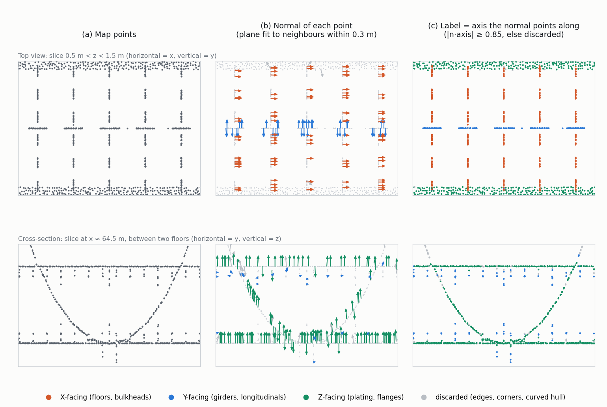
- 법선 구하기 (b): 각 점에서 반경 0.3 m 안의 이웃 점들에 평면을 맞추고, 그 평면에 수직인 방향을 법선으로 씁니다. 늑판 위 점은 법선이 배 길이 방향(x), 거더 위 점은 폭 방향(y), 판 위 점은 위아래(z)를 가리킵니다.
- 분류 (c): 법선이 x, y, z 축 중 하나와 거의 나란하면(코사인 0.85 이상, 약 32° 이내) 그 축의 "향" 점이 됩니다. 셋 다 아니면 버립니다. 모서리, 부재가 만나는 곳, 경사가 큰 곡면 선체가 여기서 빠집니다(아래 단면의 회색 곡선 부분).
- 지도 전체 결과: X 향 141,348점, Y 향 227,301점, Z 향 1,458,440점, 버림 135,013점. 바닥판과 내저판이 넓어서 Z 향이 압도적으로 많습니다.
B. 지도의 방향 맞추기 (기준 회전각)
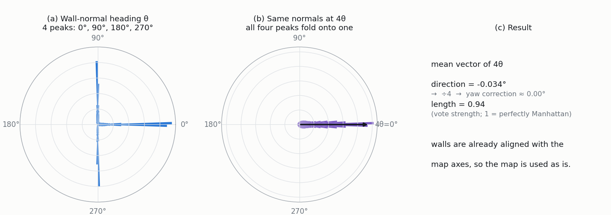
- 맨해튼 구조에서는 벽 법선이 0°, 90°, 180°, 270° 네 방향에 몰립니다(a). 이 넷은 90° 차이라 그냥 평균내면 서로 상쇄됩니다.
- 각도를 4배 하면 네 방향이 모두 같은 각도가 되어(b), 평균 벡터의 방향을 4로 나누면 "벽이 축에서 얼마나 돌아가 있는가"가 나옵니다. 위치추정 1단계(yaw 투표)와 똑같은 계산입니다.
- 이 지도는 원래 축에 맞춰 만들어서 보정각이 사실상 0입니다(지도 파일 값 9.1 × 10⁻⁵ rad). 평균 벡터의 길이 0.94는 벽 법선이 거의 완벽하게 네 방향에 모여 있다는 뜻입니다.
C. 평면 목록 만들기: y와 z 히스토그램의 봉우리
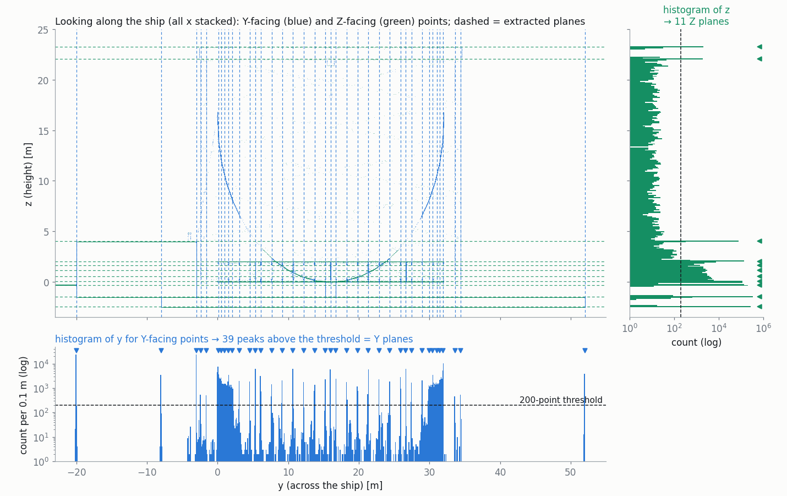
- Y 향 점들의 y 좌표만 모아 0.1 m 칸으로 셉니다. 세로로 선 거더·종늑골 한 장이 같은 y에 수천 점을 쌓아 높은 막대가 됩니다.
- 가장 높은 칸을 고르고, 주변 ±2칸의 가중 평균으로 정확한 위치를 구해 평면 하나로 기록합니다. 그 칸 ±3칸(±0.3 m)은 지워서 같은 평면이 두 번 뽑히지 않게 합니다.
- 남은 가장 높은 칸이 200점 밑으로 떨어질 때까지 반복합니다.
- Z 향 점도 z 좌표로 똑같이 합니다. 바닥판(z ≈ 0), 내저판(z ≈ 2 m), 도크 바닥(z ≈ −1.5, −2.5 m), 도크를 가로지르는 크레인 보의 아래·윗면(z ≈ 22, 23 m) 등이 잡힙니다.
결과는 숫자 목록 두 줄입니다. 위치추정 3단계에서는 스캔에서 같은 방식으로 뽑은 평면 쌍의 간격을 이 목록의 간격과 맞춰 보며 y, z 후보를 만듭니다.
D. X 시그니처와 구획
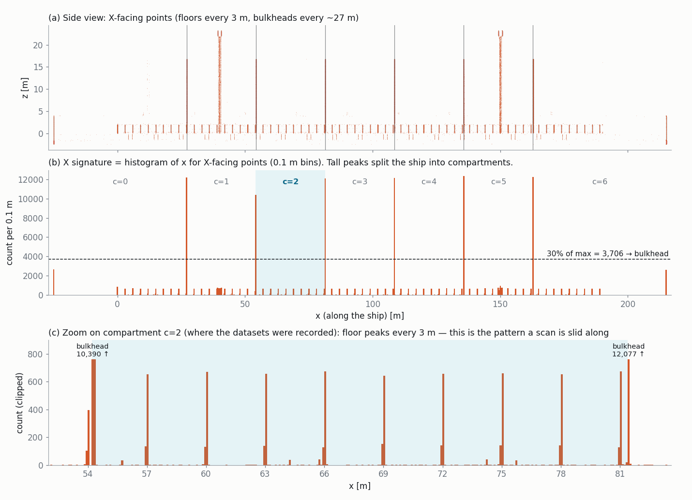
- x 방향은 y, z와 다르게 다룹니다. 늑판이 3 m마다 똑같이 반복되어 "봉우리 위치 목록"만으로는 어느 늑판인지 구분할 수 없기 때문입니다. 그래서 X 향 점의 x 히스토그램(0.1 m 칸) 전체를 그대로 저장합니다. 이것이 x 시그니처, 즉 "배 길이 방향의 지문"입니다.
- (c)처럼 구획 안에는 3 m 간격의 늑판 봉우리(칸당 수백 점)가 있고, 양 끝에 격벽 봉우리(칸당 1만 점 이상)가 섭니다. 위치추정 5단계는 스캔에서 만든 짧은 시그니처를 이 패턴 위에서 밀어 보며 맞는 x를 찾습니다.
- 구획 검출 (b): 시그니처 최대값의 30%를 넘는 칸을 격벽으로 보고, 1 m 이내 칸은 묶어 가중 중심을 격벽 위치로 씁니다. 늑판 봉우리는 문턱에 한참 못 미쳐 격벽만 남습니다. 격벽 6개(x ≈ 27.1, 54.2, 81.4, 108.5, 135.7, 162.8 m) 사이가 구획 7개가 되고, 데이터셋은 c = 2(x 54.2–81.4 m)에서 찍었습니다.
- (a)의 x ≈ 39, 150 m에 있는 높은 주황 기둥은 도크를 가로지르는 크레인 두 대(높이 약 23 m)입니다. 봉우리가 문턱에 못 미쳐 격벽으로 잡히지 않습니다.
지도 파일에 남는 것
| 항목 | 내용 | 이 지도의 값 |
|---|---|---|
| 기준 회전각 | B에서 구한 보정각 | 9.1 × 10⁻⁵ rad |
| Y 평면 목록 | C의 y 봉우리 위치 | 29개 (−20.0 … 51.98 m) |
| Z 평면 목록 | C의 z 봉우리 위치 | 11개 (−2.45 … 23.25 m) |
| X 시그니처 | D의 히스토그램 전체 | x = −25.0 m부터 0.1 m 칸 2,401개 |
구획은 파일에 따로 저장하지 않고, 지도를 읽을 때 x 시그니처에서 매번 다시 계산합니다. 또 6–8단계 점수 계산을 위해, 지도 점군을 기준 회전각만큼 돌려 최근접 탐색 구조를 만들고 지도 점마다 법선(이웃 12점)을 미리 계산해 둡니다.
스캔 데이터셋 만들기
영상과 정량 평가에 쓴 스캔은 모두 Isaac Sim에서 RTX 라이다로 찍었습니다(no_yaw, yes_yaw 각 31장). 근사 레이캐스트가 아니라 렌더러가 3D 모델에 직접 쏜 센서 출력입니다.
녹화 환경
- 라이다: 회전형 3D 라이다(Isaac Sim 예제 Rotary 설정), 10 Hz. 물리 시뮬레이션은 60 Hz.
- 정답 포즈: 매 프레임 시뮬레이터 안의 라이다 실제 위치·자세를 읽어 ROS 2 TF(map → lidar_gt)로 내보냅니다.
- 같은 시계: 점군 타임스탬프를 시뮬레이션 시간이 아니라 정답 TF와 같은 시스템 시간으로 찍어서, 스캔마다 그 순간의 정답을 정확히 짝지을 수 있습니다.
- 조작: 시뮬레이터 창에서 키보드로 라이다를 옮깁니다. 이동 1 m/s(앞뒤, 좌우, 위아래), 회전 45°/s(yaw, pitch). 원하는 자리에 멈추고 저장 키를 누르면 녹화 요청이 나갑니다.
저장 키를 눌렀을 때 일어나는 일
- 요청 시각 + 0.15 s 이후에 찍힌 첫 번째 완전한 스캔을 고릅니다. 한 바퀴가 0.1 s이므로, 키를 누를 때 이미 돌고 있던 스캔은 쓰지 않습니다.
- 스캔 시각 앞뒤의 정답 샘플 두 개로 위치는 선형 보간, 자세는 쿼터니언 정규화 보간(nlerp)을 합니다.
- 아래 조건 중 하나라도 어기면 저장을 거부하고 이유를 알려 줍니다. 위치추정기가 정지·수평 스캔을 가정하고, 움직이며 찍은 스캔은 모션 왜곡도 생기기 때문입니다.
| 검사 | 기준 | 설명 |
|---|---|---|
| 정답 시간차 | ≤ 0.05 s | 스캔 시각을 감싸는 두 정답 샘플 중 먼 쪽까지의 시간 |
| 이동 속도 | ≤ 0.02 m/s | 스캔 직전 0.3 s 동안의 최대값 |
| 회전 속도 | ≤ 1.0 °/s | 같은 구간의 yaw 변화율 최대값 |
| 기울기 | ≤ 2.0° | 센서 수직축과 연직선 사이 각도 |
| 대기 시간 | 3 s | 쓸 만한 스캔이 안 오면 요청 취소 |
- 통과하면 무효 점과 원점 근처(반경 0.1 m 이내, 반사 없음) 점을 버리고 저장합니다.
데이터셋 형태
데이터셋 하나는 스캔 파일 묶음, 정답 표 하나, 설정 기록 하나로 이루어집니다.
| 구성 | 내용 |
|---|---|
| 스캔 파일 (31개) | 스캔 1장당 PCD 파일 1개. 센서 좌표계의 x, y, z만 담김(색 없음). 18만–45만 점 |
| 정답 표 (CSV) | 스캔 1장당 1줄. 아래 열 참고 |
| 설정 기록 (JSON) | 생성 시각, 사용한 토픽과 좌표계, 포즈 규약, 위 검사 기준값 |
정답 표의 열
| 열 | 뜻 | 예 (no_yaw 2번 = Case B) |
|---|---|---|
| 번호, 파일 이름 | 스캔 식별 | 2, 000002 |
| 타임스탬프 | 스캔 시각 (s) | 1791266278.298 |
| x, y, z | 정답 위치 (지도 좌표, m) | 63.613, 18.419, 0.532 |
| 쿼터니언 (4개) | 정답 자세 | 0, 0, 0, 1 |
| yaw | 센서 x축의 방향각 (rad) | 0.0 |
| 기울기, 속도, 회전 속도, 정답 시간차 | 위 검사에서 잰 실제 값 | 0°, 0, 0, 0.009 s |
| 점 수, 센서 좌표계 이름 | 저장된 점 개수 | 314,633 |
포즈의 의미: p_지도 = R(q) · p_스캔 + (x, y, z)
두 데이터셋의 구성
| 데이터셋 | 스캔 | x 범위 [m] | y 범위 [m] | z 범위 [m] | yaw | 스캔당 점 수 |
|---|---|---|---|---|---|---|
| no_yaw | 31 | 55.6 – 76.0 | 12.1 – 20.0 | 0.53 – 1.05 | 0° 고정 | 183k – 453k |
| yes_yaw | 31 | 57.5 – 79.4 | 12.8 – 21.2 | 1.03 – 1.21 | −172.9° … +122.6° | 237k – 454k |
- 두 데이터셋 모두 구획 c = 2 (x ∈ [54.2, 81.4)) 안의 이중저 공간에서 찍었습니다. 기울기는 전부 0°, 정답 시간차는 최대 13 ms(no_yaw), 20 ms(yes_yaw)입니다.
- no_yaw는 yaw를 0°로 두고 위치만 바꿔 가며, yes_yaw는 방향도 함께 돌려 가며 찍었습니다.
- 영상의 "ground truth"는 이 표의 값을 지도 기준 좌표로 바꾼 뒤 ICP로 한 번 정밀화한 것이라 조금 다릅니다. 예: Case B의 z는 표에서 0.532 m, 영상에서 0.516 m.
입력: 라이다 스캔 한 장
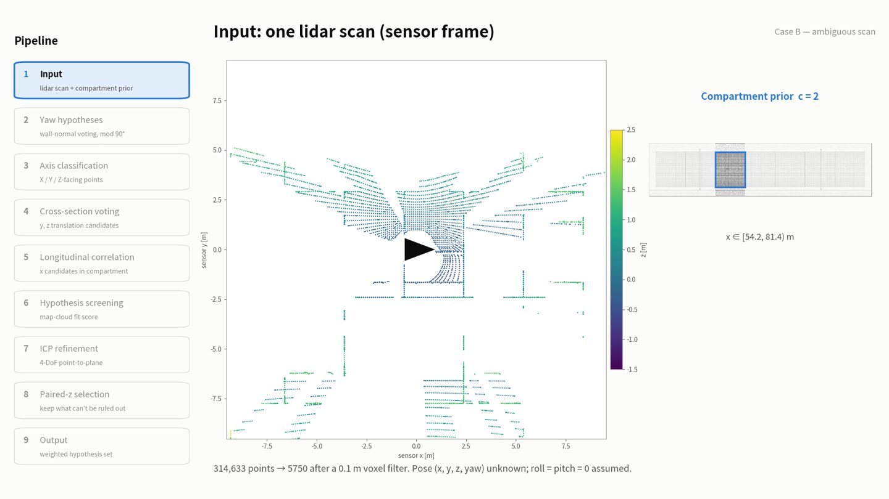
센서 좌표계로 찍힌 점군 하나가 입력입니다. 포즈 (x, y, z, yaw)는 모르고, roll = pitch = 0으로 가정합니다.
- Case B 원본 314,633점을 0.1 m 복셀 필터로 줄여 5,750점이 됩니다. (Case A: 372,493 → 5,956점)
- 그림의 색은 센서 기준 높이 z입니다(−1.5 … 2.5 m).
최종 포즈의 의미는 p_지도 = R_z(yaw) · p_센서 + (x, y, z)입니다.
Yaw 가설: 벽 법선 투표 (mod 90°)
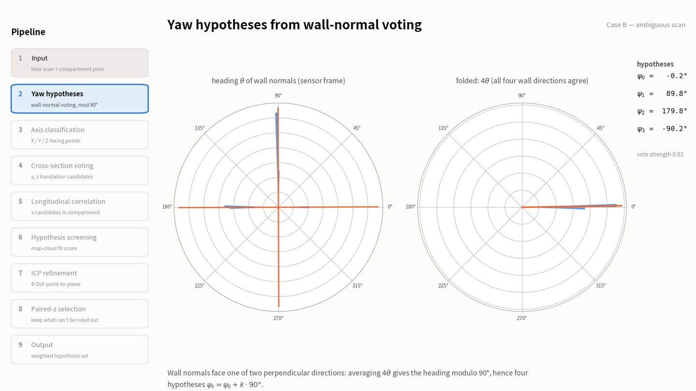
직관
방 안의 벽은 네 방향(동서남북)을 바라봅니다. 벽 법선의 방향 θ를 모아 보면 90° 간격의 봉우리 4개가 생깁니다. 그냥 평균을 내면 이 봉우리들이 서로 상쇄되어 의미가 없습니다. 그래서 각도에 4를 곱하면, 90° 차이 나는 네 방향이 360° 차이가 되어 한 점으로 겹칩니다. 겹친 방향의 평균을 구하고 다시 4로 나누면 "주된 벽 방향, mod 90°"가 나옵니다.
계산
- 스캔 점마다 반경 0.3 m 이웃으로 표면 법선 n을 추정합니다.
- |n_z| < 0.2인 점만 수직 벽으로 봅니다(Case B: 2,567점). 50점 미만이면 실패로 처리합니다.
- 원형 통계(circular statistics)로 평균을 냅니다.
−φ만큼 돌리면 주된 벽 법선이 좌표축에 놓입니다. 나머지 세 개는 같은 조건을 만족하는 다른 90° 회전입니다. 법선 투표만으로는 이 넷을 구별할 수 없으므로 네 가설을 모두 다음 단계로 넘깁니다.
Case B 실제 값
ψ = −0.2°, 89.8°, 179.8°, −90.2°
투표 강도 0.92
정답 yaw ≈ 0.0° → ψ₀가 가장 가까움
왜 정답과 0.2° 차이?
법선 추정 잡음 때문입니다. 남은 오차는 7단계 ICP가 yaw까지 함께 보정합니다.
축 분류: 점마다 X / Y / Z 향 면 라벨
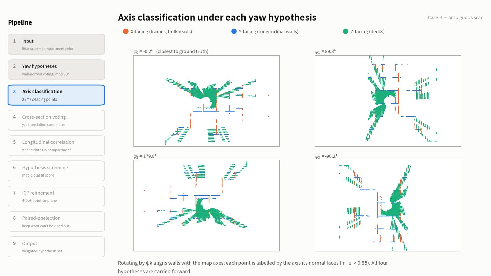
각 yaw 가설 ψ_k로 스캔을 z축 기준 회전하면 벽이 지도 축과 나란해집니다. 그다음 점마다 법선(반경 0.3 m)을 다시 구하고, 법선이 어느 축을 향하는지로 라벨을 붙입니다.
- X 향 점: 배를 가로지르는 면, 즉 늑판과 격벽. 5단계 길이방향 시그니처의 재료입니다.
- Y 향 점: 배 길이 방향으로 뻗은 벽(종늑골, 거더). 4단계 y 추정에 씁니다.
- Z 향 점: 바닥판, 내저판. 4단계 z 추정에 씁니다.
ψ₀와 ψ₂(180° 차이)는 같은 점들이 같은 축으로 분류되고 좌표 부호만 바뀝니다. ψ₁, ψ₃(90° 차이)는 X와 Y가 뒤바뀝니다. Case B에서 ψ₀의 X/Y/Z 점 수는 1,390 / 1,344 / 2,639, ψ₁은 1,344 / 1,390 / 2,639입니다.
단면 투표: y, z 이동 후보
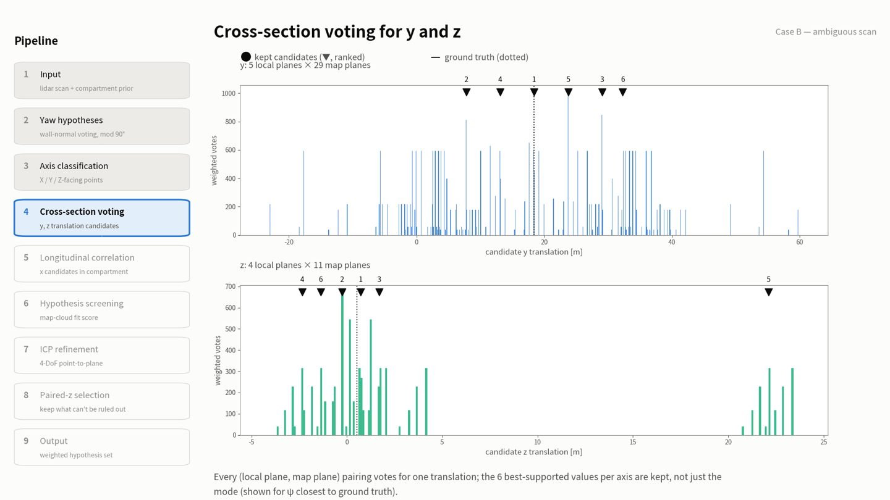
(a) 스캔에서 평면 뽑기
Y 향 점들의 y 좌표(또는 Z 향 점들의 z 좌표)로 0.1 m 히스토그램을 만들고, 봉우리를 반복해서 뽑습니다.
- 가장 높은 칸을 찾습니다. 30점 미만이면 멈춥니다.
- 그 칸 ±2칸의 가중 중심으로 평면 위치를 칸 크기보다 정밀하게 정합니다.
- ±3칸을 0으로 지우고 1로 돌아갑니다.
Case B(ψ₀): 스캔에서 Y 평면 5개, Z 평면 4개. 지도에는 Y 평면 29개, Z 평면 11개.
(b) 모든 짝이 투표
스캔의 평면 하나가 지도의 평면 하나와 같은 것이라면, 이동량은 t = 지도 평면 위치 − 스캔 평면 위치입니다. 어느 짝이 맞는지 모르니 모든 짝(5 × 29개 등)이 투표하고, 표의 무게는 스캔 평면의 점 수입니다. 맞는 이동량에서는 여러 평면 짝이 같은 값에 투표하므로 표가 쌓입니다.
최빈값 하나만 쓰지 않는 이유: 지도에 갑판과 벽이 많아서 2등, 3등 이동량이 맞는 경우가 있습니다. 그래서 축마다 상위 6개를 남깁니다.
Case B · y 후보 (ψ₀)
18.41, 7.78, 29.07, 13.09, 23.76, 32.24
정답 y = 18.42 → 1위
Case B · z 후보 (ψ₀)
0.72, −0.26, 1.69, −2.35, 22.1, −1.38
정답 z = 0.52 → 1위가 0.2 m 차이. 7단계 ICP가 메웁니다.
길이방향 상관: 구획 안 x 후보
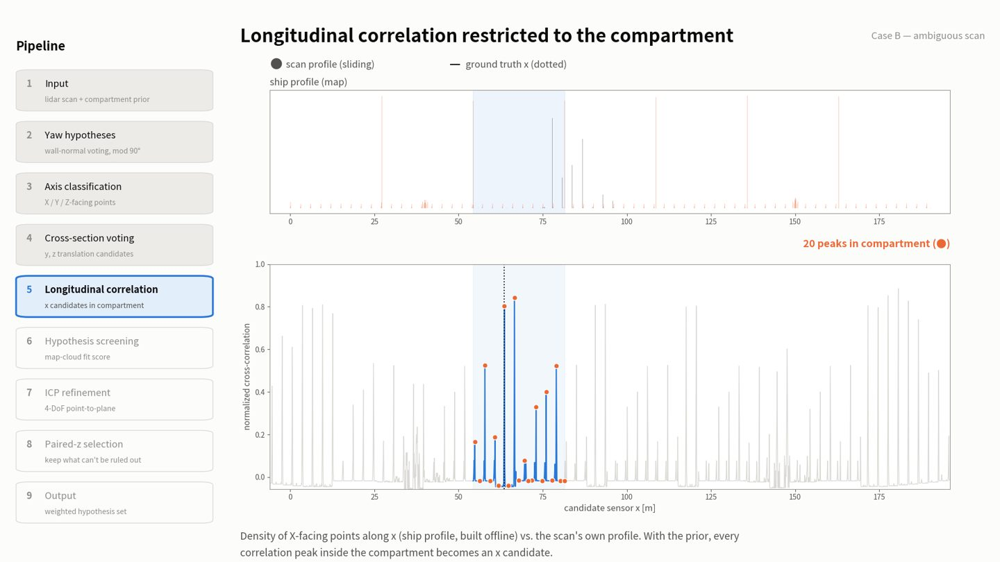
직관
X 향 점(늑판, 격벽)의 x 좌표 히스토그램은 바코드처럼 생겼습니다. 스캔에도 작은 바코드가 있습니다. 작은 바코드를 큰 바코드 위에서 밀어 가며 가장 잘 맞는 자리를 찾는 것이 이 단계입니다.
계산
- 스캔 시그니처: 3단계에서 나온 X 향 점의 x 좌표를 0.1 m 히스토그램으로 만듭니다(yaw 가설마다 따로).
- 정규화 상호상관(NCC): 지도 시그니처 위의 모든 이동량에서, 두 신호의 평균을 빼고 상관계수를 구합니다. 값은 −1…1이고, 밀도의 절대 크기와 무관하게 패턴 모양만 비교합니다.
- 구획 사전정보가 있을 때: 구획 [54.2, 81.4) 밖의 이동량은 지웁니다. 남은 곡선에서 가장 높은 곳을 뽑고 ±1 m를 지우는 것을 반복해 구획 안의 봉우리를 최대 40개까지 전부 후보로 씁니다.
- 사전정보가 없으면 배 전체에서 상위 5개만 씁니다.
여기가 모호함의 근원입니다. 그림에서 NCC 봉우리가 약 3 m마다 서 있습니다. 정답(점선) 근처 봉우리(0.80)보다 오른쪽 봉우리(66.6 m, 0.84)가 더 높습니다. 즉 상관 1등을 그냥 고르면 틀립니다. 그래서 봉우리를 모두 후보로 넘기고, 판정은 6–8단계의 실제 점군 비교에 맡깁니다.
Case B
yaw 가설마다 구획 안 봉우리 19–20개 (ψ₀: 20개)
가설 생성과 선별 (screening)
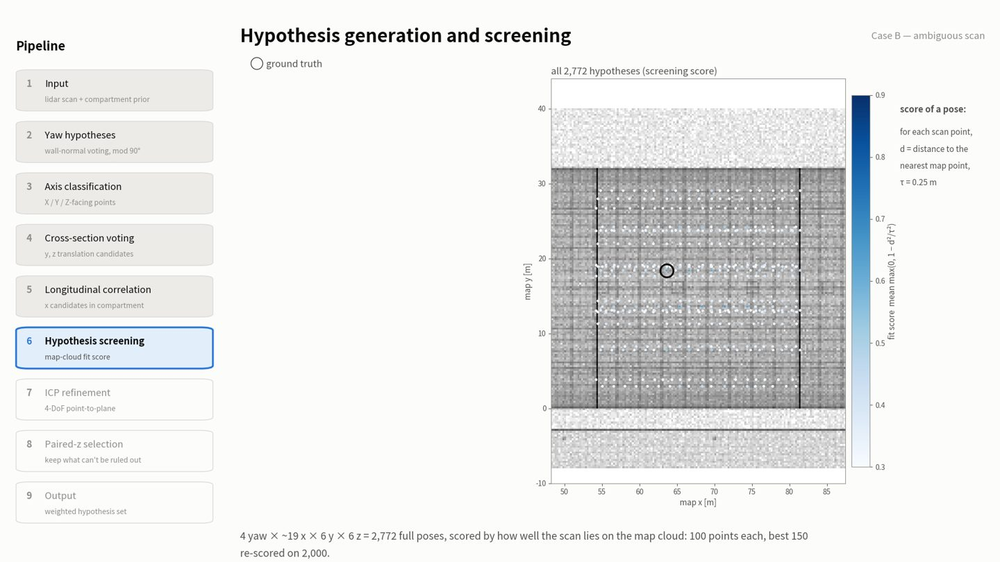
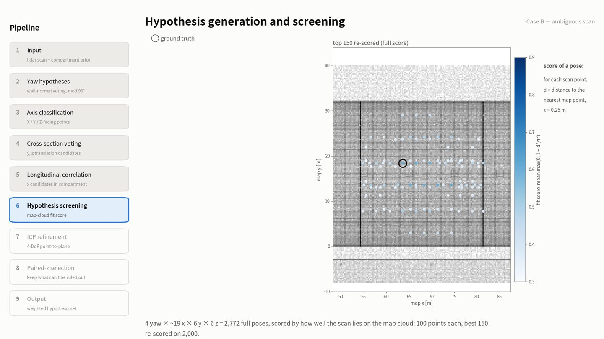
후보 조합
yaw 가설 × x 봉우리 × y 후보 × z 후보의 모든 조합이 완전한 포즈 하나입니다.
점수: 스캔이 지도 위에 얼마나 잘 얹히나
포즈로 스캔 점을 지도 좌표로 옮긴 뒤, 각 점에서 가장 가까운 지도 점까지 거리 d를 잽니다.
지도 위에 정확히 있으면 1, 0.25 m 이상 떨어지면 0이고, 그 사이는 부드럽게 줄어듭니다.
왜 0/1 인라이어 개수가 아니라 부드러운 점수인가: 딱 잘리는 임계값으로는 "정확히 맞은 포즈"와 "모든 점이 임계값 바로 안쪽에 걸친 타협 포즈"를 구별할 수 없습니다. 예를 들어 구별 포인트가 되는 늑판 하나가 다른 늑판에서 0.24 m 떨어져 있는 경우입니다. ICP는 이런 타협점을 아주 잘 찾아내기 때문에 이것을 막아야 합니다.
단계별로 좁히기
점수용 점은 무작위가 아니라 일정한 간격으로 뽑습니다. 그래야 같은 스캔은 항상 같은 점수가 나오고, 모든 가설이 같은 점 위에서 비교됩니다.
"서로 다른 포즈"의 기준: 위치가 1.0 m 넘게 다르거나 yaw가 약 9.7° 넘게 다르면 별개로 봅니다. (y, z) 후보가 여러 개라 같은 자리에 여러 가설이 겹치는 경우가 많아서, 점수순으로 훑으며 대표 하나씩만 남깁니다.
ICP 정밀화: 4-DoF point-to-plane
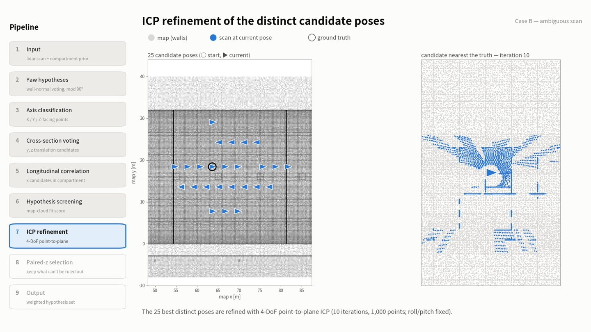
25개 대표 포즈를 각각 ICP로 미세 조정합니다. 후보들은 시그니처 칸 크기(0.1 m)나 평면 투표 잡음 때문에 수십 cm 어긋나 있을 수 있습니다.
한 번의 반복에서 하는 일
- 스캔 점 1,000개를 현재 포즈로 옮기고, 가장 가까운 지도 점과 그 점의 법선을 찾습니다.
- 대응 허용 거리를 반복에 따라 0.8 m에서 0.25 m로 선형으로 줄입니다. 처음엔 멀리 어긋난 대응도 받아 주고, 끝에는 정말 지도 위에 있는 점만 듣습니다.
- 점-평면 거리 r = n · (p − q)를 최소화하는 4자유도 증분 [Δyaw, Δx, Δy, Δz]를 선형화해서 풉니다.
- 점-점 대신 점-평면: 두 점군 모두 같은 면을 띄엄띄엄 샘플한 것이라, 점-점 ICP는 처음 옆에 있던 지도 점에 붙어 버려 지도 점 간격만큼 오차가 남습니다. 법선 방향 거리만 재면 점들이 벽을 따라 미끄러질 수 있습니다.
- 작은 감쇠항 λ: 스캔이 구속하지 못하는 방향(예: 특징 없는 복도의 길이방향)이 발산하지 않고 0에 머물게 합니다.
- 대응이 50개 미만이면 정밀화를 포기하고 원래 포즈를 돌려줍니다.
- 반복은 10회입니다. 영상의 경로는 시작점 포함 11개 포즈입니다.
정밀화 후 점수를 다시 매기고 정렬한 뒤, ICP가 두 후보를 같은 자리로 끌어왔을 수 있으므로 "서로 다른 포즈" 병합을 한 번 더 합니다.
Paired-z 선택: 1등이 배제할 수 없는 포즈는 모두 남긴다
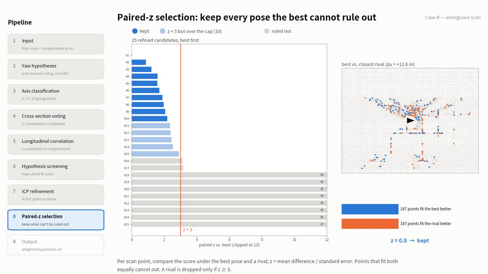
직관
두 포즈의 평균 점수 차이만 보면 안 됩니다. 스캔 점 대부분(바닥, 종방향 벽)은 어느 후보에서나 똑같이 잘 맞아서 차이를 희석시킵니다. 3 m 옆 늑판 칸으로 옮겨도 대부분의 점은 그대로 맞습니다. 정말 판단 근거가 되는 건 두 포즈에서 다르게 맞는 소수의 점이고, 그 점들이 얼마나 일관되게 1등 편을 드는지가 중요합니다.
계산 (짝지은 t-검정과 같은 형태)
같은 스캔 점들(Case B는 2,875개)에서 점마다 점수를 구하고 짝을 지어 뺍니다.
- 평균 차이가 사실상 0(10⁻⁹ 미만)이면 z = 0으로 둡니다. 완전히 반복되는 구조 위의 두 포즈는 점수가 계산 오차 수준으로만 다른데, 이것을 거의 0인 표준오차로 나누면 압승처럼 보이기 때문입니다.
- 이웃 점들은 서로 상관되어 있어서 z = 3은 p-value가 아니라 경험적으로 정한 기준입니다.
Case B에서 일어난 일
| 순위 | paired z | 판정 |
|---|---|---|
| #1 | — | 1등 (기준) |
| #2 – #10 | 0.87 – 2.18 | 유지 (9개) |
| #11 – #15 | 2.35 – 2.90 | z < 3이지만 최대 10개 제한으로 제외 |
| #16 – #17 | 3.13, 3.17 | 탈락 (아슬아슬) |
| #18 – #25 | ≈ 46 | 명백히 탈락 |
가장 비슷한 경쟁자(Δx = +12.0 m, 늑판 4칸 옆)는 187점이 1등에 더 잘 맞고, 187점이 경쟁자에 더 잘 맞아 z = 0.81로 유지됩니다. 오른쪽 그림에서 파랑은 1등에 더 맞는 점, 주황은 경쟁자에 더 맞는 점, 회색은 차이 없는 점입니다.
점을 색칠하는 기준(점수 차이 0.2 초과)은 영상 그림용입니다. 실제 판정은 위의 z만 씁니다.
출력: 가중치 붙은 가설 집합
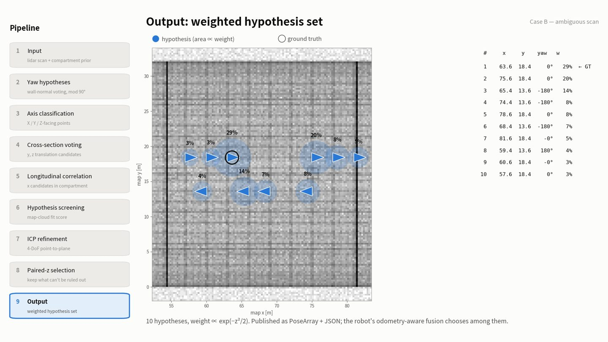
| # | x [m] | y [m] | yaw | z vs 1등 | 가중치 | 해석 |
|---|---|---|---|---|---|---|
| 1 | 63.61 | 18.42 | 0° | 0 | 28.5% | 정답 |
| 2 | 75.61 | 18.42 | 0° | 0.87 | 19.6% | +12 m (늑판 4칸) |
| 3 | 65.38 | 13.59 | 180° | 1.22 | 13.6% | 앞뒤 뒤집힌 대칭 위치 |
| 4 | 74.39 | 13.59 | 180° | 1.59 | 8.1% | 대칭 |
| 5 | 78.61 | 18.42 | 0° | 1.58 | 8.2% | +15 m |
| 6 | 68.38 | 13.59 | 180° | 1.69 | 6.8% | 대칭 |
| 7 | 81.61 | 18.42 | 0° | 1.88 | 4.9% | +18 m |
| 8 | 59.39 | 13.59 | 180° | 1.96 | 4.2% | 대칭 |
| 9 | 60.61 | 18.42 | 0° | 2.05 | 3.5% | −3 m |
| 10 | 57.61 | 18.42 | 0° | 2.18 | 2.7% | −6 m |
남은 가설들의 모양 자체가 이 환경의 모호함을 보여 줍니다. yaw 0°인 가설은 3 m의 배수만큼 x로 밀린 자리이고(늑판 반복), yaw 180°인 가설은 y = 13.59에서 배를 반대로 본 대칭 위치입니다.
로봇에 전달되는 것
- 가설 전체: 포즈 목록과 함께 가설마다 점수, 1등 대비 z, 가중치, 그리고 결정 여부(decisive)와 사용한 구획 번호.
- 대표 포즈 하나: 1등 가설. 축별 불확실도 σ는 0.05 m와 다른 가설들의 가중 퍼짐을 합친 값이라, 가설이 퍼져 있는 축일수록 커집니다. yaw 신뢰도는 1등의 가중치입니다.
decisive는 가설이 정확히 1개일 때입니다.
Case A와 Ablation
Case A: 가장 비슷한 경쟁자도 탈락
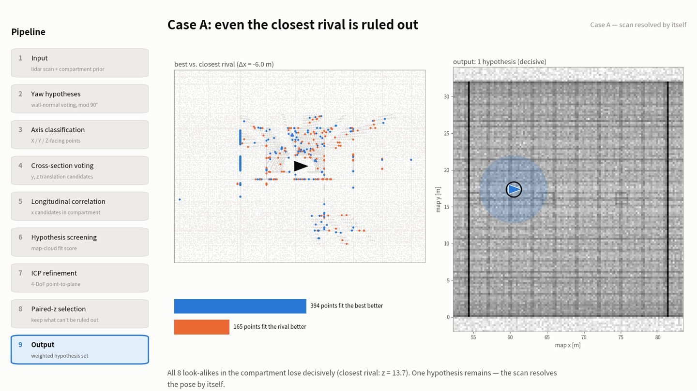
no_yaw 0번 스캔에서는 구획 안 닮은꼴 8곳이 모두 확실히 집니다. 가장 가까운 경쟁자도 1등 편 394점 대 경쟁자 편 165점, z = 13.7이라 탈락합니다. 25개 후보의 z가 전부 13.6 이상이어서 가설 1개(decisive)만 남고, 그것이 정답 (60.45, 17.37, 0°)입니다.
"닮은꼴(look-alike)"을 고른 방법 (영상 설명용): 정답의 yaw, y, z를 고정한 채 x만 0.1 m 간격으로 배 전체를 훑으며 점수를 매기고, 구획 안에서 최고 점수 −0.1 이내인 극대점 중 1등에서 1.5 m 넘게 떨어진 것을 고릅니다. 각각 ICP로 정밀화한 뒤 1등과 paired z를 계산하고, 영상은 그중 z가 가장 작은 것을 보여 줍니다.
Ablation: 구획 사전정보 없이
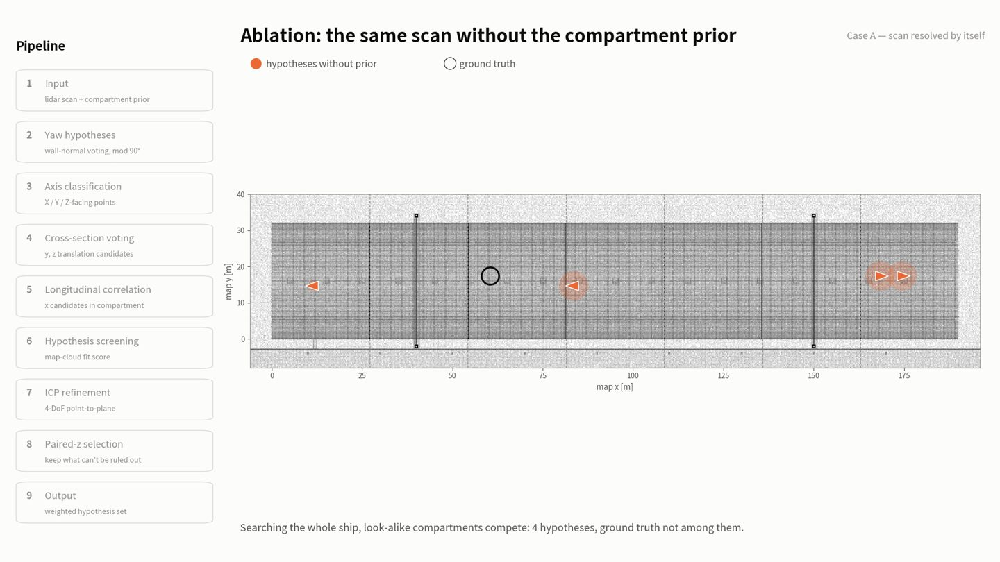
사전정보가 없으면 yaw당 x 봉우리를 배 전체에서 상위 5개만 쓰고, 다른 구획의 닮은꼴이 경쟁합니다. 결과는 x = 168.4, 83.6, 174.4, 11.6 m의 가설 4개이고 정답은 그중에 없습니다. 구획마다 비슷한 구조가 있어 후보 봉우리가 엉뚱한 구획에 다 쓰이기 때문입니다. 데이터셋 전체에서도 사전정보가 없으면 정답 포함률이 5/31(no_yaw), 6/31(yes_yaw)로 떨어집니다.
정량 결과
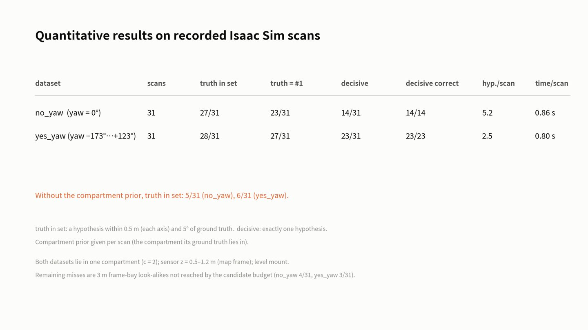
| 데이터셋 | 스캔 | 정답 포함 | 정답 = 1위 | decisive | decisive 중 정답 | 평균 가설 수 | 스캔당 시간 |
|---|---|---|---|---|---|---|---|
| no_yaw (yaw = 0°) | 31 | 27/31 | 23/31 | 14/31 | 14/14 | 5.2 | 0.86 s |
| yes_yaw (yaw −173°…+123°) | 31 | 28/31 | 27/31 | 23/31 | 23/23 | 2.5 | 0.80 s |
- 정답 포함: 각 축 0.5 m 이내, yaw 5° 이내인 가설이 집합에 있음. decisive: 가설이 정확히 1개.
- decisive라고 답한 경우는 전부 맞았습니다(14/14, 23/23). 모르면 모른다고 하고, 하나라고 할 때는 틀리지 않는다는 것이 이 방법의 핵심 성질입니다.
- 구획 사전정보는 스캔마다 정답이 속한 구획을 줍니다. 두 데이터셋 모두 c = 2 한 구획 안, 센서 높이 z = 0.5–1.2 m, 수평 장착입니다.
- 남은 실패(no_yaw 4/31, yes_yaw 3/31)는 후보 수 한도 안에 들지 못한 3 m 늑판 칸 닮은꼴입니다.
영상 구성
영상의 모든 중간 결과는 위 방법을 실제로 실행했을 때 나온 값이고, 손으로 만든 그림은 없습니다. 제작은 세 단계였습니다.
- 실행 기록: 두 스캔(no_yaw 0번, 2번)에 대해 위치추정을 돌리면서 단계별 중간값(yaw별 분류 점, 평면, 후보, 시그니처, x 봉우리, 선별 결과, ICP 경로, paired z, 유지 여부)을 모두 기록했습니다. 기록을 켠 실행과 끈 실행의 결과가 같은지도 확인했습니다. 구획 사전정보 없이 한 번 더 돌려 Ablation 장면을 만들었습니다.
- 프레임 그리기: 기록을 읽어 1920 × 1080 그림을 프레임마다 그렸습니다. 왼쪽 사이드바에 9단계와 현재 단계가 강조됩니다. 5단계의 NCC 곡선만 그림용으로 다시 계산했고, 그 최고점이 기록된 x 봉우리와 0.01 m 안에서 일치하는지 확인했습니다.
- 인코딩: 24 fps H.264 동영상으로 묶었습니다. 총 3,089프레임, 약 2분 9초.
색은 색각이상에도 구별되는 세 색(파랑, 주황, 청록)을 Y, X, Z 축에 고정해서 썼고, 지도 배경은 0.25 m 격자에 쌓인 점 수를 로그 스케일 회색으로 그렸습니다.
타임라인
| 장면 | 시작 | 길이 | 움직임 |
|---|---|---|---|
| 타이틀 | 0:00 | 5 s | 정지 |
| 문제 | 0:05 | 9 s | 정지 |
| 1 입력 | 0:14 | 2 + 5 s | 스캔이 각도순으로 그려짐 |
| 2 Yaw | 0:21 | 3 + 6 s | 가설선이 하나씩 등장 |
| 3 축 분류 | 0:30 | 8 s | 정지 |
| 4 단면 투표 | 0:38 | 2.5 + 6 s | 후보 ▼가 순위순으로 등장 |
| 5 길이방향 | 0:47 | 5 + 6 s | 스캔 프로필이 구획 안을 미끄러짐 |
| 6 선별 | 0:58 | 6 + 6 s | 전체 → 상위 150 |
| 7 ICP | 1:10 | 4 + 5 s | 반복마다 포즈 이동 |
| 8 Paired-z | 1:19 | 5 + 8 s | 막대 → 경쟁자 비교 추가 |
| 9 출력 | 1:32 | 8 s | 정지 |
| Case A | 1:40 | 6 + 6 s | 비교 → 출력 추가 |
| Ablation | 1:52 | 7 s | 정지 |
| 정량 결과 | 1:59 | 10 s | 정지 |
설정값 총정리
| 단계 | 항목 | 값 |
|---|---|---|
| 입력 | 스캔 복셀 크기 | 0.1 m |
| 2, 3 | 법선 추정 반경 | 0.3 m |
| 2 | 벽 판정 (|n_z| 상한) | 0.2 |
| 2 | 최소 벽 점 수 | 50 |
| 3 | 축 정렬 판정 (법선 성분 하한) | 0.85 |
| 4 | 평면 히스토그램 칸 | 0.1 m |
| 4 | 평면 최소 점 수 (스캔 / 지도) | 30 / 200 |
| 4 | 축별 y, z 후보 수 | 6 |
| 4 | 후보 간 최소 간격 | 0.5 m |
| 5 | 시그니처 칸 | 0.1 m |
| 5 | x 봉우리 수 (구획 있음 / 없음) | 최대 40 / 5 |
| 5 | 봉우리 간 최소 간격 | 1 m |
| 6 | 점수 거리 τ | 0.25 m |
| 6 | 선별 점 수 / 재점수 점 수 | 100 / 2,000 |
| 6 | 재점수 대상 수 | 150 |
| 6 | "다른 포즈" 기준 | 1.0 m 또는 9.7° |
| 7 | ICP 대상 수 / 점 수 / 반복 | 25 / 1,000 / 10 |
| 7 | 대응 허용 거리 | 0.8 → 0.25 m |
| 7 | 최소 대응 수 | 50 |
| 7 | 지도 법선 이웃 수 | 12 |
| 8 | 탈락 기준 | z ≥ 3 |
| 8 | 최대 가설 수 | 10 |
| 9 | 축별 σ 하한 | 0.05 m |
| 지도 | 격벽 판정 (최대값 대비) / 병합 거리 | 30% / 1.0 m |
| 지도 | 지도 점군 복셀 | 0.2 m |
용어 정리
- 맨해튼 가정
- 주요 면들이 서로 직교하는 세 방향 중 하나를 향한다는 가정. 선박 중앙부(parallel body)에 해당하고, 곡면인 선수·선미에는 맞지 않습니다.
- 기준 프레임 (canonical)
- 지도의 벽이 좌표축과 정확히 나란해지도록 돌린 좌표계. 지도와 스캔 모두 같은 방법으로 맞추므로 일관됩니다.
- X 향 / Y 향 / Z 향
- 법선이 해당 축을 향하는 점. X 향 = 늑판·격벽, Y 향 = 종늑골·거더, Z 향 = 바닥판·내저판.
- 시그니처 (프로필)
- X 향 점의 x 좌표 히스토그램. 배 길이 방향의 바코드.
- NCC
- 정규화 상호상관. 평균을 빼고 크기로 나눈 상관이라 패턴 모양만 비교합니다.
- 구획 (compartment)
- 격벽 사이 구간. 이 지도에는 c = 0…6의 7개가 있고 간격은 약 27.1 m.
- 점 점수
- 스캔 점 하나가 지도에 얼마나 붙어 있는지, max(0, 1 − d²/τ²).
- paired z
- 점별 점수 차이의 평균을 표준오차로 나눈 값. 1등이 경쟁자를 얼마나 일관되게 이기는지.
- decisive
- 가설이 정확히 하나 남은 경우.
- 닮은꼴 (look-alike)
- 정답의 y, z, yaw를 그대로 두고 x만 옮겼을 때 거의 똑같이 맞는 위치.
알려진 한계
- 곡면 선체 구간(선수·선미)은 맨해튼 가정이 깨져서 다루지 않습니다.
- 롤·피치는 추정하지 않고 0으로 가정합니다.
- 비대칭 특징이 하나도 안 보이는 완전 주기 구간은 스스로 풀 수 없고, 낮은 확신으로 보고합니다. 랜드마크나 피두셜 융합이 다음 단계입니다.